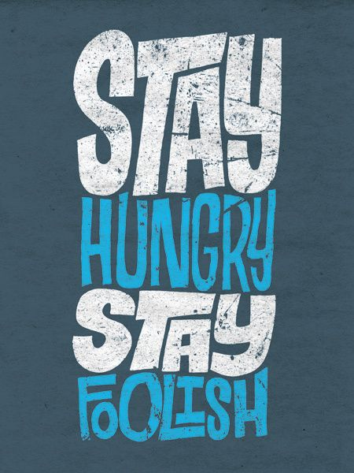
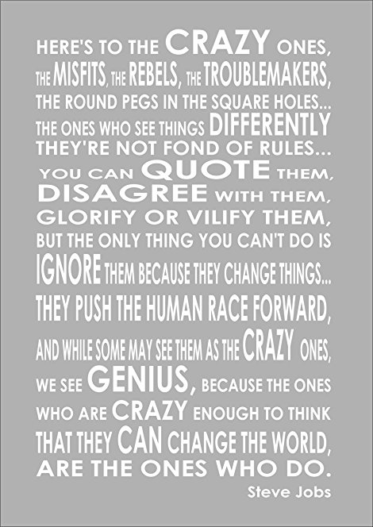
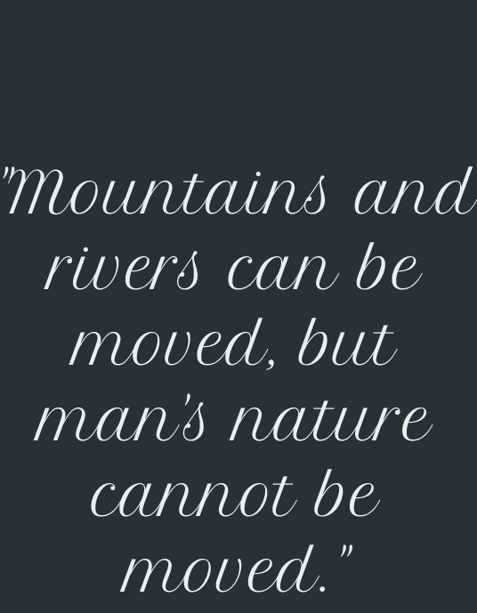

--------------------------------------------------------------------------
HOPE
When I had lost the battle of my life,
and my heart was broken into pieces;
when I saw my tools lying shattered,
and my life was upside down;
I looked around and saw death,
the only path I could walk upon.
I closed my eyes,
and the warm breeze carried the ashes off my heart;
a fire burned within me,
and I rose, for a new dawn had taken birth.
I smiled, and started to build it again.
from the ashes.
Much time has now passed,
dusk has fallen again.
I looked at the setting sun,
and blues filled my heart.
But I raised my head,
and my eyes shone with bright;
I was waiting patiently,
for a new dawn was yet to come.
-Aditya Morolia
--------------------------------------------------------------------------
The Incredible She
She walks like a kitten,
And acts like bitten;
She talks like a duchess,
And roars like lioness;
She feels like a princess,
And treats like a Satan;
Yet the heart craves,
For that one incredible she;
With that one incredible look,
And with that fascinating, dumb, chattering wit,
And with all the glamour she can ever wear,
To drive you mad,
To smile you and shake you.
And then that Satan breaks you,
Burns you, agonizes you.
And yet the heart craves,
For that one incredible she.
-Aditya Morolia